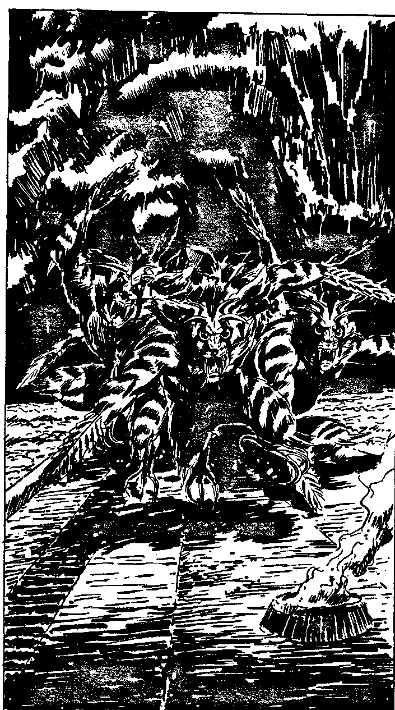

278
You plummet down the glowing tunnel, illuminated by the green phosphorescence of the moss. The Warriors are gaining on you as you burst out into another Darkhome farm. You are following a path cutting through the middle of two lines of vats fungus fields stretching away to either side. Some twenty metres ahead is the yawning black hole of the exit. Thick blue seams of some mineral line the walls above it. Some of the blue mineral has fallen in a small pile of crumbled rock near the entrance. Gasping for breath, the Warriors almost upon you, you realise you won't make it. You'll have to turn and fight. Will you:
| Use your blaster on your pursuers? | Turn to 310 |
| Try to use your Power of Will to control two of them? | Turn to 300 |
| Fire your blaster at the pile of bluish mineral at the exit? | Turn to 317 |